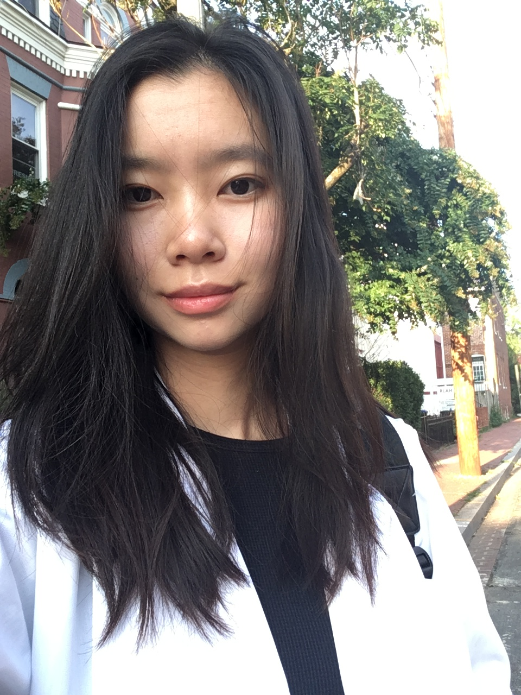

Victoria Nguyen is an aspiring software engineer and current undergraduate at the University of the People in the Bay Area. Although Victoria graduated from Howard University in May 2019 with a B.S. in Biology and a chemistry minor, she sought to pursue further education in computer science after noticing the lack of technological innovation in the healthcare field.
Throughout her undergraduate years at Howard University, Victoria conducted research in Alzheimer's disease, Parkinson's disease, pediatric stroke, hospital administration, fertility, and human-computing interactions at the University of Texas' Barshop Institute, National Institute on Aging, Children's National Medical Center, Guangan'men Hospital, and Howard University. During the latter half of her undergraduate years, Victoria had the notion of utilizing technology to optimize laboratory and hospital processes while studying fertility in C.elegans and becoming a medical scribe in Howard University Hospital's Emergency Department. As part of Howard University's College of Arts and Sciences Student Council, Comprehensive Medical Mentoring Program, and Phi Beta Kappa, Victoria has significantly developed her project management skills in her 4 years of undergraduate, which was further demonstrated in Bison Hacks 2019, where she introduced non-engineering majors to developing problem-solving skills in healthcare. By the end of her time at Howard University, Victoria imparted an awareness for campus food insecurity and finding solutions to real-world problems, which influenced the development of the campus' inaugural food pantry, TheStore@HU.
As a nontraditional tech enthusiast, Victoria is bolstering her computer science education at the University of the People with 42 Silicon Valley's project-based curriculum that emphasizes peer-based learning and logical thinking. Apart from her studies, Victoria is current developing a Flutter based mobile application geared toward empowering adolescents aged 14-18 years old with chronic migraines. Her research on current migraine applications in the market led Victoria to present at Hawaii University's 2019 International Conference, where she published her first paper proceedings.
i In her free time, Victoria passionately volunteeers to de-escalate crisis situations and mentors a traditionally underrepresented student about Python programming foundations and the importance of deploying the code to a version-control system known as GitHub. Her computer science studies revitalizes her passion toward solving problems in the healthcare field, and she believe that it is just a matter of time for healthcare to catch up with the technology boom. Her overarching goal is to bridge the gap between medicine and technology.